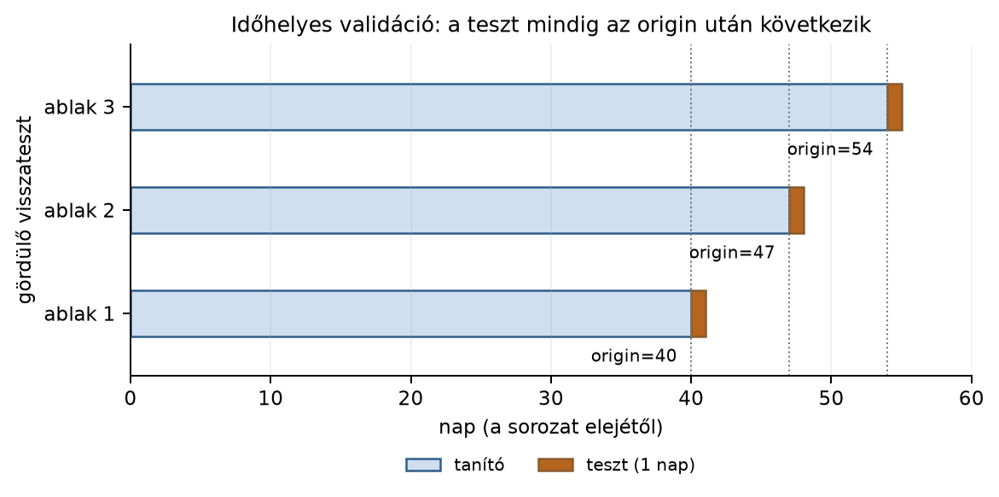

Belépő · [BŐVÍTŐ MODUL] · szint: haladó · idő: 90 perc · eszköz: pandas, statsmodels
Előfeltétel: 20.1. alfejezet · Célkészség: Időhelyes feature és gördülő visszateszt · Kimenet: projektartefaktum és ellenőrzött futtatási jegyzőkönyv.
A Northstar webshop napi rendelésszámát szeretnénk egy nappal előre látni, hogy a raktár a másnapi kapacitást tervezhesse. A megfigyelési egység egy naptári nap, a bemenet a teljesített rendelések darabszáma aznap. A célváltozó , ahol a döntési nap indexe; a horizont nap. A döntéshozó a nap zárásakor rendelkezésre álló múltat ismeri, tehát -t már igen, -t még nem.
A labor egy 60 napos, determinisztikus szintetikus sort használ, hogy a feature-ök minden gépen kézzel is ellenőrizhetők legyenek. Három előre rögzített originnal futtatunk gördülő visszatesztet: 2025-02-11, 2025-02-18 és 2025-02-25. Mindegyik originre a tanítóhalmaz az origint megelőző sorokból áll, a teszthalmaz pontosan a következő nap. Az induló becslés: a sor heti ciklust és enyhe trendet tartalmaz, ezért a naiv, utolsó megfigyelt értékes baseline a heti fázisváltásnál akár 15–17 rendeléses hibát is vét; egy 7 napos laget használó modelltől ennél jobbat várunk.
Legyen a napi rendelésszám, mértékegysége darab/nap, egész napindex. A teljes megfigyelt sorozat alakja . Az jelölés azt az információhalmazt jelenti, amely a időpontban ténylegesen rendelkezésre áll: informálisan minden, ami legkésőbb a napig ismert. Egy prediktor akkor időhelyes, ha -mérhető, azaz nem használ -nél későbbi értéket.
Lag (késleltetés). A lépéses lag a múltbeli érték:
Pandasban series.shift(k). A kimenet ugyanolyan hosszú,
mint a bemenet; az első
elem NaN, mert ott a múlt még nincs meg. Ha a cél
,
akkor
még múlt, tehát használható predictor.
Rolling (mozgó ablak). A szélességű mozgóablak a napon záródó, napos múlt átlaga:
Pandasban series.rolling(window=w).mean(). Az ablak
napokat tartalmazza; a rolling önmagában nem néz a jövőbe.
Ha a cél a
napi érték lenne, a
-t
is tartalmazó ablak már a céllal átfedne; ilyenkor
shift(1).rolling(w).mean() a
-ig
záródó ablakot adja. A mi célunk
,
ezért a
nap még múlt, és a
záródású ablak megengedett.
Forecast horizon (előrejelzési horizont). A cél
,
ahol
a jövőbeli lépések száma. Az itteni labor
lépéssel dolgozik: a
sorhoz tartozó címke a következő napi rendelésszám, kódban
shift(-1). Az utolsó sor célja NaN, mert a
sorozat végén túl nincs jövő.
Gap (tisztító hézag, purge gap). A gap a felhasznált
múlt vége és a cél időszaka közötti, szándékosan kihagyott tartomány.
Két szerepe van. Egyrészt a hétnapos horizontnál a
napok sem feature-ként, sem tanítócímkeként nem állnak rendelkezésre a
napon. Másrészt a realisztikus folyamatban a címke maga is késve
érkezik: a Northstar kezdőlaborban a label_available_at
csak a tényleges kézbesítéskor lép életbe, ezért a cutoff előtti
rendelések közül a még meg nem figyelt célú sorokat egy kihagyott
határsávval zárjuk ki a tanításból. A gap tehát nem üres sor, hanem
adatfolyami feltétel.
Expanding split. Az időbeli tanítóhalmaz a sorozat elejétől az originig bővül; a tesztablak mindig az origin után következik. Ha az origint tologatjuk, gördülő originhoz jutunk. Például az első origin a 41. nap, a második a 48., a harmadik az 55.; minden lépésben a tanítóhalmaz egyre hosszabb, a teszthalmaz mindig a soron következő nap.
Temporal leakage (időbeli szivárgás). Akkor lép fel,
ha a modell olyan adatot használ, amely a döntés pillanatában még nem
volt ismert. Formája lehet feature-szivárgás: például a célképzéshez
használt shift(-1) oszlop véletlenül bekerül a predictorok
közé; vagy split-szivárgás: a sorok véletlen összekeverésével a jövőbeli
szomszédok a tanítóhalmazba kerülnek.
A shift és a rolling prefixaggregációkra vezethető vissza. Ha a kumulált összeg mellett, akkor a mozgóablak egy prefixkülönbség:
Mindkét oldal -mérhető: a napig tartó, kumulált múltból számol. Ez a matematikai hidunk: nem az egyes napokat memorizáljuk, hanem az időben monoton módon elérhető aggregátumokat.

Az ábra a rolling-origin visszateszt szerkezetét mutatja: minden
ablakban a tanítóhalmaz az origint megelőző napokból áll, a teszt pedig
az origin utáni nap. A tanítóablak bővül, a tesztablak mindig előre lép.
A konklúzió ábra nélkül is ugyanaz: az as-of fegyelem nem formai
szabály, hanem az időbeli szivárgás megelőzése; a teszt napja soha nem
szerepelhet a tanítóban. A teljes generátor:
lab/figures/make_concept_figures.py
validation_timeline(); a reprodukálható mag:
import matplotlib.pyplot as plt
origins = [40, 47, 54]
fig, ax = plt.subplots(figsize=(6.6, 3.4))
for row, origin in enumerate(origins):
ax.barh(row, origin, height=0.45, color="#cfdff0", edgecolor="#2f5d8a")
ax.barh(row, 1, left=origin, height=0.45, color="#b5651d", edgecolor="#8a5a2f")
ax.text(origin - 1, row - 0.34, f"origin={origin}", ha="right", va="top")
ax.set_yticks(range(3)); ax.set_yticklabels(["ablak 1", "ablak 2", "ablak 3"])
ax.set_xlabel("nap (a sorozat elejétől)"); ax.set_ylabel("gördülő visszateszt")
ax.set_xlim(0, 60); ax.grid(axis="x", alpha=0.2); plt.show()Először kézi kontroll egy 12 napos mini soron. A kód pandas 2.2.3-mal futtatható; a kimenetet nem a szövegíró futtatta, hanem a shift és rolling definíciójából levezetett elméleti érték.
import pandas as pd
idx = pd.date_range("2025-01-01", periods=12, freq="D")
df_mini = pd.DataFrame(
{"orders": [10, 12, 9, 11, 13, 15, 14, 16, 18, 20, 19, 22]},
index=idx,
)
df_mini["lag1"] = df_mini["orders"].shift(1)
df_mini["roll3_past"] = df_mini["orders"].shift(1).rolling(window=3).mean()
print(df_mini)Elméletileg várt kimenet:
| index | orders | lag1 | roll3_past |
|---|---|---|---|
| 2025-01-01 | 10 | NaN | NaN |
| 2025-01-02 | 12 | 10.0 | NaN |
| 2025-01-03 | 9 | 12.0 | NaN |
| 2025-01-04 | 11 | 9.0 | 10.33 |
| 2025-01-05 | 13 | 11.0 | 10.67 |
| 2025-01-06 | 15 | 13.0 | 11.00 |
| 2025-01-07 | 14 | 15.0 | 13.00 |
| 2025-01-08 | 16 | 14.0 | 14.00 |
| 2025-01-09 | 18 | 16.0 | 15.00 |
| 2025-01-10 | 20 | 18.0 | 16.00 |
| 2025-01-11 | 19 | 20.0 | 18.00 |
| 2025-01-12 | 22 | 19.0 | 19.00 |
A 2025-01-04 sor roll3_past értéke a 01-01, 01-02 és
01-03 rendelések átlaga:
.
A shift(1) miatt a saját napja, a 11, nem szerepel az
ablakban.
A laborra készítsük el a 60 napos determinisztikus sort és a három
origint. A munkakönyvtár a projektgyökér; a fájlt mentsük
s078_rolling_backtest.py néven, és futtassuk a lab
uv környezetével:
uv run python s078_rolling_backtest.pyimport numpy as np
import pandas as pd
import statsmodels.api as sm
t = np.arange(60)
raw = 40.0 + 20.0 * np.sin(2 * np.pi * t / 7) + 0.25 * t
daily = pd.Series(
raw,
index=pd.date_range("2025-01-01", periods=60, freq="D"),
name="orders",
).round(1)
feat = pd.DataFrame({"orders": daily})
feat["lag1"] = feat["orders"].shift(1)
feat["lag7"] = feat["orders"].shift(7)
feat["roll7"] = feat["orders"].rolling(window=7).mean()
feat["target_lead1"] = feat["orders"].shift(-1)
feat = feat.dropna()
origins = pd.to_datetime(["2025-02-11", "2025-02-18", "2025-02-25"])
for origin in origins:
train = feat.loc[feat.index < origin]
test_row = feat.loc[origin]
baseline_pred = test_row["orders"]
X_train = sm.add_constant(train[["orders", "lag7"]])
y_train = train["target_lead1"]
model = sm.OLS(y_train, X_train).fit()
x_test = np.array([[1.0, test_row["orders"], test_row["lag7"]]])
model_pred = float(model.predict(x_test)[0])
print(
f"origin={origin.date()} baseline={baseline_pred:.1f} "
f"model={model_pred:.1f} actual={test_row['target_lead1']:.1f}"
)A naiv baseline predikciója az origin napi érték, tehát
,
mert
mellett ezt ismerjük utoljára. A modell az orders jelenlegi
értékét és a 7 napos laget használja. A három sor elméletileg várt
baseline és tényértéke a determinisztikus képletből:
origin=2025-02-11 baseline=34.6 model=<futtatástól függ> actual=50.5
origin=2025-02-18 baseline=36.4 model=<futtatástól függ> actual=52.2
origin=2025-02-25 baseline=38.1 model=<futtatástól függ> actual=54.0A model oszlop a statsmodels által megoldott legkisebb
négyzetes becslés eredménye; ez a szemléltető kimenet, nem a könyvírás
során mért érték.
A három origin a tiszta időbeli felosztás szerződését mutatja. Minden originra a tanítóhalmaz csak az origint megelőző sorokból áll, ezért a legkésőbbi tanítócímke az origin napi rendelésszám, amely a nap zárásakor már ismert. A tesztsor az origin naphoz tartozik, célja az origin+1 nap; ez a döntés pillanatában még jövő, de az értékeléskor már tény. A naiv baseline a három fázisváltós napon rendre alábecsül: a hétfői/vasárnapi ciklusból adódó emelkedést nem tudja. A heti laget használó modell a 7 nappal korábbi hasonló hétnapot látja, ezért várhatóan közelebb kerül a tényhez.
A kód időhelyességi feltétele: a
prediktoroszlopokban nincs a sor napjánál későbbi
információ. A target_lead1 céloszlop szándékosan a
következő napból származik, ezért az előbbi állítás a teljes
feat táblára nem igaz. A lag7 minden sora
-ből
jön, a roll7 ablak
napokat fed le, a cél
.
A tanítóhalmaz index < origin, tehát az OLS
illesztésekor a legkésőbbi felhasznált nap az origin előtti; a
tesztpredikció az origin napi múltból számol.
A három origin hibáinak átlaga nem konfidenciaintervallum. A 16.2. alfejezetben tanultak szerint kis számú, összefüggő hiba esetén a foldok szórása nem becsli megbízhatóan a mintavételi bizonytalanságot. A 8.2. alfejezetben tanult egy sor, egy megfigyelési egység elv itt napi szinten érvényes: ha valaki a rendeléstételeket napokra összegezné, az aggregáció előtt szemcsézettségi kontroll kell.
As-of-validáció: gördülő visszatesztnél minden feature előállítása kizárólag az adott origin időpontban rendelkezésre álló adatokból történhet. A teljes idősoron becsült imputáció, skálázás vagy szezonális komponens időbeli szivárgást okozhat.
A dátum szerinti rendezés önmagában nem garantálja, hogy egy címke az
adott foldban már ismert volt. Minden sorhoz rögzíteni kell az
esemény idejét és a rendelkezésre állás
idejét (label_available_at); a fold csak akkor
használhatja a sort, ha a rendelkezésre állás nem későbbi az origin
időpontjánál. A target_lead1 esetében az esemény a
nap, a címke a
nap végén válik ismertté, ezért:
feat["label_available_at"] = feat.index + pd.Timedelta(days=1)
for origin in origins:
train = feat[feat.index < origin]
assert (train["label_available_at"] <= origin).all(), (
f"időszivárgás: {origin} előtt nem elérhető címke a tanítóhalmazban"
)Ha egy címke késve, például három nappal később érkezik, a
label_available_at értéke
;
az a fold, amelynek originja
vagy
,
nem használhatja, még akkor sem, ha az esemény dátuma korábbi. A késői
címke csak a későbbi foldokban jelenhet meg. Ugyanez vonatkozik a
feature-ökre is: ha egy külső adatforrás publikációs késése van, a
feature feature_available_at idejét kell használni, nem az
esemény idejét.
| Eset | Esemény ideje | Rendelkezésre állás | Használható a origin foldban? |
|---|---|---|---|
| Normál címke | igen, ha origin | ||
| Késve érkező címke | nem, csak a utáni foldokban | ||
| Késői feature-publikáció | nem, a feature a előtti originban nem ismert |
Értelmezés. A mini táblázatban add meg a
2025-01-07, 2025-01-08 és 2025-01-12 sorok lag1 és
roll3_past értékeit. Melyik sorban először értelmezhető a
roll3_past, és miért pont ott?
Implementálás. A 60 napos labor
daily sorához készítsd el a lag7 és a
roll7 oszlopot, majd írasd ki a 2025-02-26 és 2025-03-01
közötti négy sort az orders, lag7,
roll7 oszlopokkal. Ellenőrizd, hogy az utolsó sor
roll7 értéke a tőle visszafelé számított hét nap
átlaga.
Hibadiagnózis. Egy kolléga a következőt futtatja a 60 napos adaton:
from sklearn.linear_model import LinearRegression
from sklearn.model_selection import train_test_split
from sklearn.metrics import mean_squared_error
X = df[["orders"]].iloc[:-1]
y = df["orders"].shift(-1).iloc[:-1]
X_tr, X_te, y_tr, y_te = train_test_split(
X, y, test_size=0.3, random_state=0
)
m = LinearRegression().fit(X_tr, y_tr)
print(np.sqrt(mean_squared_error(y_te, m.predict(X_te))))A kolléga 1.7-es RMSE-t kap, miközben a valós egy lépéses előrejelzés hibája a laborban 10 felett van. Mi a hiba a szerződésben, és hogyan javítanád úgy, hogy az értékelés a döntési pillanatban elérhető múltat tükrözze?
A kért sorok: 2025-01-07 lag1=15.0,
roll3_past=13.00; 2025-01-08 lag1=14.0,
roll3_past=14.00; 2025-01-12 lag1=19.0,
roll3_past=19.00. A roll3_past a 2025-01-04
sorban értelmezhető először, mert a shift(1) után a 01-04
sorban a 01-03, 01-02, 01-01 hármas áll; a 01-03 soron a shiftelt ablak
még tartalmazza a 01-01 NaN-ját.
A megoldás a labor feature-kódját használja:
feat["lag7"] = feat["orders"].shift(7)
feat["roll7"] = feat["orders"].rolling(window=7).mean()
print(feat.loc["2025-02-26":"2025-03-01", ["orders", "lag7", "roll7"]])Az utolsó sor 2025-03-01, indexe
.
A roll7 ablak a 2025-02-23 és 2025-03-01 közötti hét nap.
Elfogadási tűrés: a kerekített napi értékekkel számolva az ellenőrző
átlag és a kinyomtatott roll7 eltérése kisebb, mint 0.1.
Amelyik sor a saját napját is belevenné a lag7 helyére, az
invariáns megsértője.
orders oszlop a
nap értéke, a címke shift(-1) a
nap. A train_test_split alapértelmezett
shuffle=True keveréssel a szomszédos sorokat együtt
dobálja: a tanítóhalmazba olyan
sorokból származó
értékek kerülnek, amelyek a teszthalmaz orders jellemzőivel
majdnem azonosak. Ettől a modell szinte tökéletesnek látszik, miközben
valós használatkor a
nap nem ismert. Javítás: időrendi split, keverés nélkül, előre rögzített
originnal:origin = feat.index[41]
train = feat.loc[feat.index < origin]
X_tr = train[["orders"]]
y_tr = train["target_lead1"]
test = feat.loc[[origin]]
# predikció a test orders-bőltarget_lead7 = orders.shift(-7). A
feature-ök legkésőbb
-ig
használhatók; a roll7 a
-ig
záródó ablak. A gap: a
napok sem a targetben, sem a feature-ökben nem jelenhetnek meg, és a
tanítócímke akkor áll rendelkezésre, ha
teljesült. Az origin napon a tanítóhalmaz utolsó megengedett sora ezért
;
a teszt sor az origin nap, célja origin+7. A Northstar kezdőlabor
label_available_at < cutoff feltétele ugyanezt a purging
gapet írja elő a 7 napos kézbesítési célra.A leggyakoribb hiba az, hogy a véletlen train_test_split
az idősorokon biztonságosabbnak tűnik a random_state
rögzítése miatt, de a reprodukálhatóság nem pótolja az időbeli
szerződést. A fenti 3. feladatban a véletlen keveréses modell 1.7-es
RMSE-t mutat, miközben ugyanaz a predictor valós, egy lépéses
használatban a heti ciklus fázisváltásainál 15-17 rendeléses hibát követ
el. A random_state csak azt garantálja, hogy ugyanaz a
hibás sorrend ismétlődik; nem azt, hogy a jövő ne szivárogjon a múltba.
A 20.1. alfejezetben tanult frekvencia és gap
itt döntő: a rendszeres napi rács mellett is külön kell kérdezni, hogy a
címke mikortól része
-nek.
Önellenőrzés: minden predictorom indexe legfeljebb a döntési nap? A target minden sora a döntési nap után h lépéssel van? A tanító sorok címkéi megérkeztek-e az originig? Ha bármelyik kérdésre nemleges a válasz, a gapet vagy a splitet javítani kell.
A lag és a rolling csak akkor időhelyes, ha kizárólag az
-ben
ismert múltból számol; a cél
horizontjához képest a
nap még múlt lehet, a
már nem. A gap a címke késését és a hétnapos horizont közbülső napjait
vágja ki; a Northstar label_available_at szűrése ugyanezt a
szerződést valósítja meg. Az expanding split az originig növekvő
tanítóablakot, utána jövőbeli tesztnapot ad; a véletlen keverés idősoron
szivárgást okoz. A három origin hibája nem statisztikai intervallum.
Következő alkalmazásként a 20.3. alfejezetben a
naiv és szezonális baseline mellé egyszerű, időhelyes feature-ökkel
dolgozó előrejelző modelleket építünk.